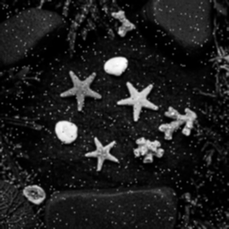
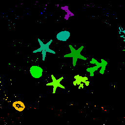
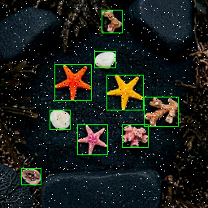
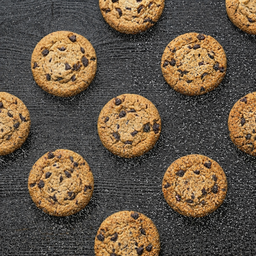
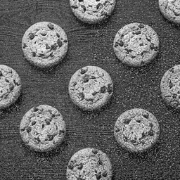
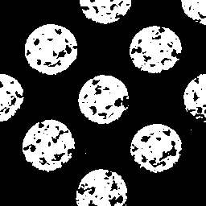
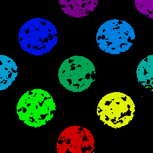
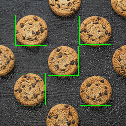

P1｜Input RGB 原圖
本頁整合 Lab7 Draw Bounding Box Engine 的最終成果展示，包含 P1～P4 pipeline 中間結果、Final BMP、Diff 驗證、RAM waveform 觀念、SuperLint/Simulation 摘要、硬體最佳化方法與實驗心得。重點是證明輸出影像與 golden result 在 pixel-level 上完全一致。
下方採用固定 4 rows × 8 stages 排版：每一列代表一個 pattern，每一欄代表影像處理流程的一個階段。這樣可以清楚比較從輸入影像、灰階、濾波、二值化、CCL 標記、Overlay 到 Golden/Diff 的完整資料流。
13_assets_final/ 固定資料夾路徑，並使用固定 grid，不再用 auto-fit，確保 4×8 版面穩定呈現。















Final BMP 是最後寫回 AnsSRAM 的結果圖，保留原始 RGB 影像內容，並只在 bounding box 邊界畫上綠色框線。根據 Lab7 規則，bounding box 應為 1-pixel green outline，不應填滿物件內部。

PASS，errors = 0。綠色框線標示有效 bounding boxes。

PASS，errors = 0。綠色框線標示有效 bounding boxes。

PASS，errors = 0。綠色框線標示有效 bounding boxes。

PASS，errors = 0。綠色框線標示有效 bounding boxes。
Waveform 檢查重點不只是看 done 是否拉高，而是要確認 ImgROM、UrSRAM、AnsSRAM 的 enable、write enable、address 與 data 是否在正確 clock edge 對齊。若 Addr 或 WEN 晚一個 cycle，可能造成整張圖偏移或產生大量 pixel mismatch。
Img_CEN=0 啟用讀取，Img_A 以 row-major 方式掃描 0～65535，Img_Q 回傳 32-bit RGB pixel。Ur_WEN=1，寫入時 Ur_WEN=0。Ans_D，bounding box 邊界使用綠色常數 32'h0000_FF00。done 才能拉高通知 testbench 結束。| 項目 | 目前結果 | 說明 |
|---|---|---|
| RTL Simulation | P1～P4 PASS | 四組測試影像皆通過，terminal result 顯示 errors = 0。 |
| Total Errors | 0 | 表示輸出與 golden result 在 pixel-level 完全一致。 |
| Diff Image | Black / No visible mismatch | Diff 圖為黑色時代表沒有差異 pixel。 |
| SuperLint Coverage | 待 SuperLint report 補入 | 作業要求至少 90%。若有 warning，需確認不影響可合成性與功能。 |
| Gate-level Simulation | 待 drawBbox_syn.v / .sdf 補入 | 需在 Design Compiler 產生 netlist 與 SDF 後，再執行 post-synthesis simulation。 |
| Total Cell Area | 待 area_rpt.txt 補入 | PA Rank 需使用 P4 post-simulation time × total cell area。 |
>> 4 取代除法器。透過本次 Lab7，我學到如何把影像處理演算法轉換成可合成的 RTL 硬體架構。軟體程式通常可以直接使用二維陣列與函式呼叫完成影像處理，但硬體設計必須明確規劃每個 clock cycle 中資料從哪裡讀、寫到哪裡，以及何時進入下一個 FSM state。尤其 ImgROM、UrSRAM 與 AnsSRAM 的 CEN、WEN、address 與 data 必須完全對齊，否則即使演算法正確，也可能因為一個 cycle 的時序偏移導致整張圖產生 pixel mismatch。
在功能面上，本實驗整合了灰階轉換、Gaussian filtering、Otsu thresholding、binary mask、8-connected CCL、bounding box 計算與 overlay 繪圖。每一個階段都會影響下一個階段的結果，因此最有效的 debug 方法不是直接看最終 BMP，而是逐步輸出 gray、gaussian、mask、labels、overlay 與 diff 圖。從 4×8 pipeline 圖可以看出，當 diff 圖為全黑時，代表整個 pipeline 的資料流與 golden result 完全一致。
| 問題 | 可能原因 | 修正方式 |
|---|---|---|
| 圖片整體偏移 | ROM read latency 或 SRAM write timing 錯一個 cycle | 檢查 address/data 是否同 cycle 對齊，必要時加入 wait state。 |
| Bounding box 少畫或多畫 | CCL label equivalence 未完全 resolve，或 bbox min/max 更新不完整 | 檢查 parent table、root label 與 bbox update 條件。 |
| 前景背景顛倒 | Threshold 後 polarity 未修正 | 加入 foreground ratio 或背景比例判斷，必要時做 mask inversion。 |
| 圖片不顯示 | HTML 使用錯誤路徑，例如 assets/P1_input.png 但圖片不在該資料夾 | 使用正確相對路徑，或把圖片資料夾一併打包。 |